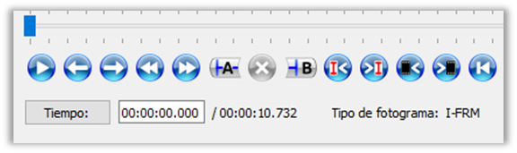
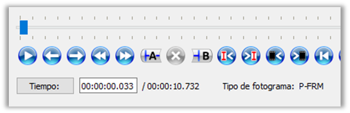
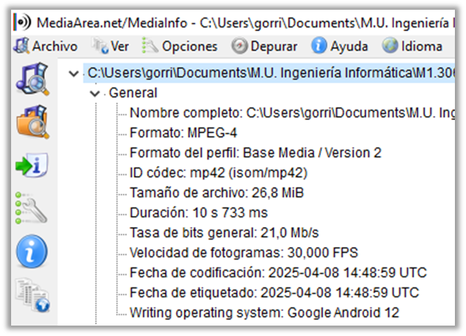
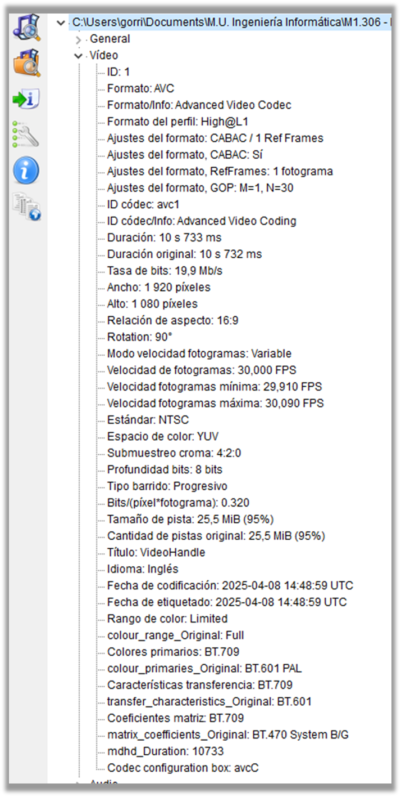

Ejercicio 1: Familiarización con la aplicación Avidemux. Contenido estático
- Vídeo asset-01.mp4
Tareas 1.1, 1.2, 1.3 y 1.4
(Tarea 1.1) La codificación del clip original es H.264. Se trata de una codificación con perdidas perteneciente la familia de MPEG-4 AVC. Los colores se representan en el espacio YUV con un submuestreo de 4:2:0.
(Tarea 1.2) Las características principales del vídeo son:
- Tamaño: 1.920 x 1.080 píxeles
- Cuadros/segundo: 30 fps(redondeado)
- Duración: 10,732 segundos
- Tamaño fichero: 28.119.911 B
Para calcular el tamaño sin comprimir:
- Tamaño de un frame: 1.920 px * 1.080 px * 3 B = 6.220.800 B/frame
- Tamaño por segundo: 6.220.800 B/frame * 30 frame/s = 186.624.000 B/s
- Tamaño total: 186.624.000 B/s * 10.732s = 2.002.848.768 B
(Tarea 1.3) Para calcular el factor de compresión:
- FC = Tamaño “original” / Tamaño “comprimido” = 2.002.848.768 B / 28.119.911 B = 71,2
(Tarea 1.4) La extensión del archivo de vídeo es .mp4, por lo que el contenedor es MPEG-4 Part 14. Coincide con la tabla de contenedores del apartado 3.3, así como con la compatibilidad entre dicho contenedor y el codec H.264 MPEG-4 AVC.
Tareas 1.5, 1.6, 1.7 y 1.8
(Tarea 1.5) El primer fotograma es de tipo “I” (intracode/fotogramas clave) y el segundo de tipo “P” (predictiva).
 (Tarea 1.6) En el clip hay 11 fotogramas de tipo “I”. Estos fotogramas se comprimen espacialmente y sirven como referencia para el resto de las imágenes del clip. El resto de los fotogramas se calculan mediante una estimación del movimiento existente a partir de dichos fotogramas clave.
(Tarea 1.7) La estructura GOP de este clip es N = 30 (distancia entre dos fotogramas I) y M = 1 (distancia entre fotograma I y el siguiente fotograma I o P). Es decir, este clip se compone solo de fotogramas I y P, empezando por el primer I y siendo los siguientes 29 fotogramas de tipo P (corresponde a 1 segundo del clip). No contiene fotogramas B.
(Tarea 1.8) Es necesario tener en cuenta la estructura GOP a la hora de editar un vídeo. Como los fotogramas P y B se calculan en base a los I, es importante realizar los cortes de los clips en los fotogramas clave para mantener la integridad visual del resto de clips. Si se realiza un corte en un fotograma que no sea I, al reensamblar habría que recodificar para mantener dicha integridad.
Avidemux (y otros editores), en modo copy (manteniendo la calidad) obliga a marcar en un fotograma I, y si no se hace de esta manera, el programa selecciona el fotograma I más cercano. Si se va a recodificar (y perder calidad), permite realizar el corte en cualquier punto.
En los siguientes hilos del foro de Avidemux, por ejemplo, se discuten estos temas:< p>
Tarea 1.9
Ambas aplicaciones dan información sobre la codificación de vídeo, tamaño de imagen, velocidad media de fotogramas (FPS) y duración total del vídeo, además de información sobre la composición de los frames (espacio de color, submuestreo de croma, profundidad, colores primarios, etc.).
De todas formas, MediaInfo ofrece mucha más información con más detallada, como, por ejemplo, información del perfil y el nivel (High@L1), estructura GOP, velocidad de fotogramas mínima y máxima, tamaño concreto de la pista de video (25,5 MiB) y la codificación entrópica (CABAC).
 